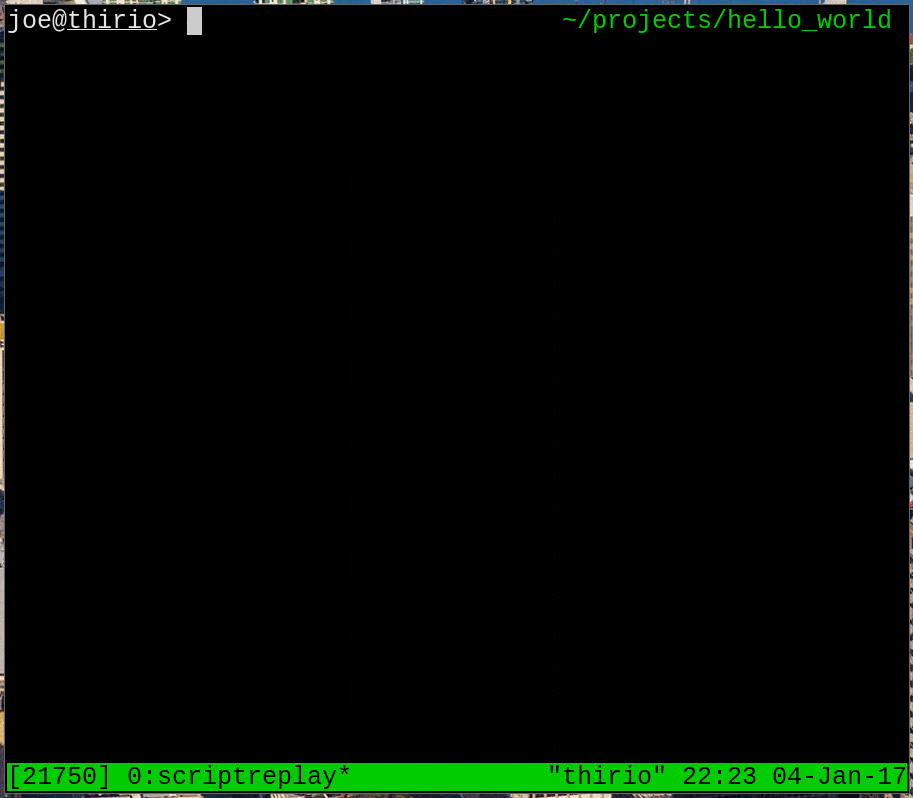

For a long time, I have been arranging the code for all my C++ projects in the same way:
joe@thirio> tree
.
├── bin
│ └── foobar
├── dep
│ ├── foo.d
│ └── bar.d
├── Makefile
├── obj
│ ├── foo.o
│ └── bar.o
└── src
├── foo.cc
└── bar.cc
4 directories, 8 files
All the source code for the project lives under the src subdirectory. Each
source file is compiled into the corresponding object file under obj, and any
target executables are generated under bin. To allow for correct incremental
builds, dependency information for each file is generated under dep. This
layout keeps source files separate from generated files and works very well
with git, requiring only a few lines in a .gitignore file to ignore all the
generated files.
However, the Makefile used to achieve this is often unwieldy and writing one
from scratch for each project is tiresome, especially for smaller projects. To
solve this, I have created a script which I have somewhat narcissistically
named jb.

jb, short for Joe’s Builder, is approximately 250 lines of zsh. When
invoked, jb dynamically generates a Makefile by examining the contents of
each file in the source directory. Since the makefile is procedurally generated,
its unwieldiness is no longer an issue, and the dependency analysis that it does
is crude but fast. It has what I consider to be “sensible defaults” which allow
it to build most of my projects with no additional configuration. And, to
top it all off, I even implemented autocompletion.
A snapshot of the script can be downloaded here.